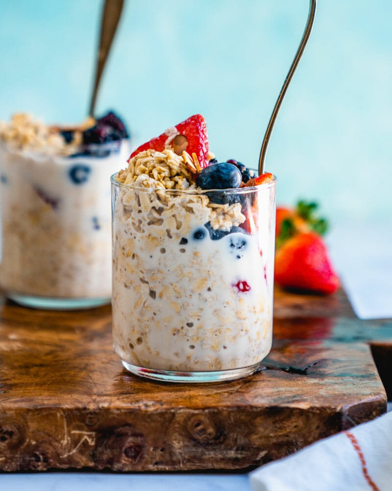

Overnight Oats

Description
The easiest oatmeal you'll ever make! A few minutes of prep in the evening leaves you with a delicious and
nutritious breakfast the next morning. Follow the recipe exactly, or experiment with your own add-ins!
Ingredients
- 1/2 cup Oatmeal
- 1/4 cup Milk
- 1/4 cup Blueberries
- 1 tsp Cinnamon
Steps
- Add oatmeal to a sealable container
- Add in milk and cinnamon, stir
- Top with Blueberries
- Seal container and refrigerate overnight (about 8 hours)
- Enjoy!